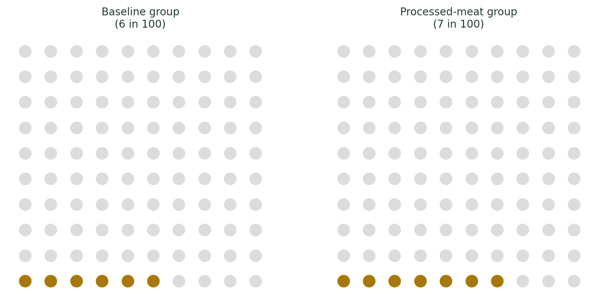
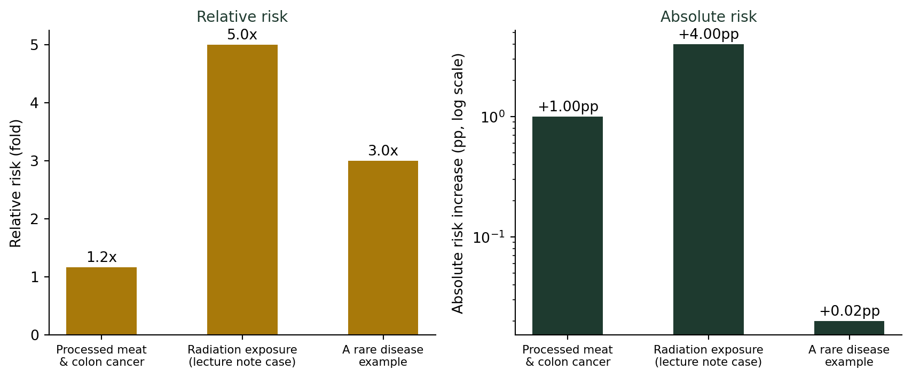

(비율과 백분율의 함정) 위험이 두 배 증가했다는 뉴스는 얼마나 위험한가?
통계기초
기술통계
’가공육을 매일 먹으면 대장암 위험이 18% 증가한다’는 보도, 실제로 몇 명에게 어떤 의미일까? 상대위험과 절대위험을 구분해서 읽는 법을 다룹니다.
“위험이 18% 증가했다”는 보도
건강 관련 통계는 강의 중 가장 반응이 뜨거운 주제다. 몇 해 전, 세계보건기구(WHO) 산하 기관이 “가공육을 매일 일정량 이상 먹으면 대장암 위험이 18% 증가한다”고 발표했을 때도 그랬다. 한국에서도 다음 날 “소시지가 발암물질”이라는 자극적인 제목의 기사가 쏟아졌고, 한동안 대형마트 소시지 코너가 한산했다는 얘기까지 돌았다.
18%라는 숫자만 보면 상당히 위협적이다. 그런데 이 18%는 정확히 무엇의 18%일까?
상대위험(RR)과 절대위험, 같은 숫자 다른 이야기
역학·의학 통계에서는 이런 위험 비교를 상대위험도(Relative Risk, RR)라는 지표로 나타낸다.
\[\text{RR} = \frac{\text{노출군의 발생률}}{\text{비노출군의 발생률}}\]
“위험이 18% 증가했다”는 말은, 가공육을 먹는 집단의 대장암 발생률이 먹지 않는 집단보다 상대적으로 18% 더 높다는 뜻이다(RR ≈ 1.18). 이 계산 자체는 틀리지 않았다. 문제는, 이 숫자가 원래 발생률이 얼마였는지를 전혀 알려주지 않는다는 점이다.
절대위험이 함께 필요한 이유
건강 커뮤니케이션 전문가들이 실제로 설명에 사용하는 근사치에 따르면, 대장암의 평생 발생 위험은 대략 100명 중 6명(6%) 수준이다. 가공육을 매일 먹는 집단에서는 이 위험이 대략 100명 중 7명(7%) 정도로 올라가는 것으로 알려져 있다.
\[\frac{7}{6} \approx 1.17 \;(\text{약 } 17{\sim}18\% \text{ 증가})\]
상대적으로는 18% 증가가 맞지만, 절대적으로는 100명 중 1명이 늘어난 것이다.
진짜 조심해야 할 경우: 원래 위험이 아주 작을 때
상대위험이 위험한 착시를 만드는 진짜 이유는 따로 있다. 원래 발생률이 아주 작은 사건일수록, 상대위험은 쉽게 몇 배씩 뛴다.

가운데 “방사능 노출” 사례는 비노출군 발생률 1%, 노출군 발생률 5%로 상대위험(RR)이 5배에 달한다. 이때는 절대위험도 4%포인트나 늘어나므로, 상대위험과 절대위험이 함께 심각하다. 반면 오른쪽 “희귀질환” 사례는 상대위험이 3배(200% 증가)로 커 보이지만, 절대위험은 0.01%에서 0.03%로 늘어난 것뿐이라 실제 영향은 미미하다. 상대위험 하나만 보고는 이 둘을 구분할 수 없다.
더 깊이: 상대위험도와 승산비(오즈비)
이 글에서 다룬 상대위험도(RR)는 통계학에서 역학 연구 지표로 정식으로 다뤄진다. 강의노트 〈기초통계 4. 교차표 검정 — 상대위험도와 승산비〉에서는 방사능 노출과 질병 발생 사례(\(\hat\pi_1=0.05,\ \hat\pi_2=0.01,\ RR=5\), 이 글의 두 번째 사례와 같은 예제다)를 통해 RR의 정의와 해석 기준, 그리고 사례-대조군 연구에서 대신 쓰이는 승산비(Odds Ratio)와의 차이까지 다룬다. 신문 기사의 “몇 배 위험” 뒤에 있는 정식 통계적 정의가 궁금하다면 참고할 만하다.
결론: “몇 배”라는 말을 들으면 “원래 얼마인데?”
위험 관련 보도를 읽는 법
- “위험이 N% 증가”라는 표현을 보면, 상대위험인지 절대위험인지부터 구분한다.
- 원래 발생률(기저 위험)이 얼마인지 함께 찾아본다. 기저 위험이 아주 작다면, 상대위험이 커 보여도 실제 영향은 작을 수 있다.
- 반대로 기저 위험이 이미 상당히 크다면, 작아 보이는 상대위험 증가도 무시하면 안 된다.
- “몇 배” “몇 퍼센트 증가”라는 말은 항상 비교 대상(기준값)과 함께 이해한다. 이는 지난 글의 %와 %p 구분과도 같은 원리다.
상대위험은 “위험요인이 있는지 없는지”를 알려주는 유용한 신호다. 그러나 “그래서 나에게 실제로 얼마나 위험한지”를 알려주는 것은 절대위험이다. 뉴스의 자극적인 배수(倍數)에 놀라기 전에, 그 뒤에 있는 원래 숫자부터 찾아보자.
건강 기사를 볼 때마다 나는 학생들에게 같은 순서를 권한다. 제목의 배수를 보고 놀라지 말고, 본문으로 내려가 “원래 발생률이 몇 퍼센트였는지”부터 찾으라고. 대개 그 답은 기사의 가장 마지막 문단, 가장 작은 글씨로 숨어 있다.